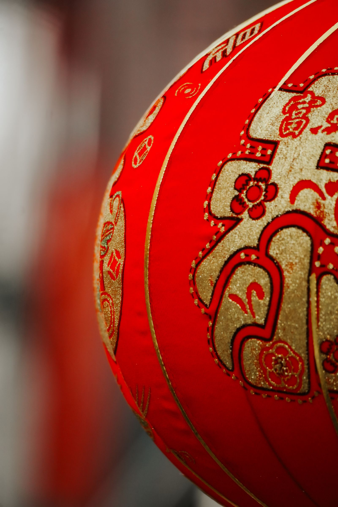
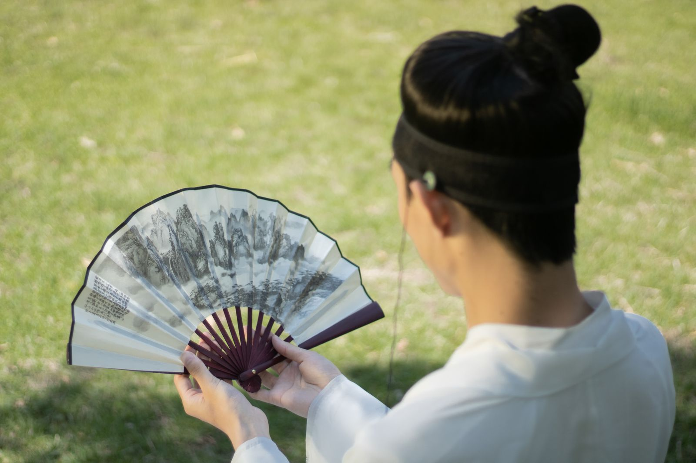

Stories of Jinling
一件器物
一段金陵
云锦的经纬、灯彩的竹篾、折扇的竹骨——手艺是这座城最慢的语法。我们走访工坊，把他们的时间，抄写给你看。
01 · 云锦织造
日织五厘米，
是丝线的慢语法
南京云锦木机妆花手工织造技艺，2009 年入选联合国教科文组织人类非物质文化遗产代表作名录。大花楼织机高逾四米，需要提花工与织工两人配合：一人在上提拽花本，一人在下投梭打纬。
“通经断纬”是云锦最难的一手——纬线不贯通，按图案一段一段织回去，正反两面都看不到线头。一天下来，熟练的织工也只能织出五厘米。
我们在云锦博物馆旁的工坊里待到傍晚，看老师傅把一根断了的金线重新接上，动作轻得像在缝一件旧衣裳。

东晋 · 417 年
建康设“斗场锦署”，江南官营织锦自此发端。
明清
江宁织造局专供御用，云锦进入鼎盛，曹雪芹家族三代主事。
2009
南京云锦织造技艺列入人类非物质文化遗产代表作名录。
今天
大花楼织机仍在运转，年轻学徒从穿线开始学起。

02 · 秦淮灯彩
灯火甲天下，
一直有人接着点
秦淮灯会始于南朝，盛于明清，素有“灯火甲天下”之誉。每年腊月到正月，夫子庙一带的灯市会亮成一条河。
荷花灯是最经典的一盏：竹篾扎骨，绢面裱糊，十一瓣花瓣层层叠叠，取“和和美美”之意。老艺人说，扎灯最难的是“让灯有精神”——骨架要挺，花瓣要活，灯光要暖。
如今灯彩进了课堂，也进了年轻人的书桌。一盏小灯，接住的不只是光，还有一代代人的手温。
03 · 金陵折扇
收是秦淮一线水，
展开是整座金陵
金陵折扇兴于明清，夫子庙一带曾“扇庄林立”。扇骨多用毛竹，经水磨、抛光、烫钉，开合之间有一声清脆的“嗒”。
扇面是文人的江湖：一面画秦淮水岸，一面留白待题。我们在老门东遇到一位做了四十年扇子的师傅，他说扇子最讲究“合得拢、打得开、立得稳”。
夏天过去了，扇子收起来，南京的脾气也就收进了抽屉里。
